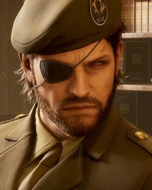

Background
 Naked Snake, also known as Big Boss, is the protagonist of Metal Gear Solid 3: Snake Eater. He is a highly skilled operative for FOX, a special forces unit of the United States government. In this game, he is sent on a mission to the Soviet Union during the Cold War to extract a defector and destroy a powerful weapon called the Shagohod. Throughout the game, players witness Snake's transformation from a loyal soldier to a legendary figure in the Metal Gear series.
Naked Snake, also known as Big Boss, is the protagonist of Metal Gear Solid 3: Snake Eater. He is a highly skilled operative for FOX, a special forces unit of the United States government. In this game, he is sent on a mission to the Soviet Union during the Cold War to extract a defector and destroy a powerful weapon called the Shagohod. Throughout the game, players witness Snake's transformation from a loyal soldier to a legendary figure in the Metal Gear series.
Becoming Big Boss

Snake's transformation into Big Boss is defined by the final events of Operation Snake Eater. Throughout the mission, he is ordered to eliminate his mentor, The Boss, who appears to have defected to the Soviet Union. Believing he is serving his country, Snake carries out the mission despite the emotional weight of confronting the person who trained and inspired him. After defeating The Boss, Snake learns that her defection was a staged mission orchestrated by the United States government to prevent nuclear escalation. She knowingly sacrificed her reputation and life to protect her country. This revelation profoundly changes Snake’s view of loyalty and patriotism. Although he is awarded the title “Big Boss” for completing the mission, the honor feels hollow. The experience plants the seeds of disillusionment that shape his future actions and ultimately define his legacy within the Metal Gear timeline.Legacy
 The legacy of Naked Snake as Big Boss is one of the most influential in the Metal Gear series. His actions during Operation Snake Eater reshape global power structures and inspire future generations of soldiers. Over time, the legend of Big Boss grows beyond the man himself, becoming a symbol of strength, independence, and rebellion against political manipulation. His story establishes the foundation for many of the conflicts that define the broader Metal Gear timeline.
The legacy of Naked Snake as Big Boss is one of the most influential in the Metal Gear series. His actions during Operation Snake Eater reshape global power structures and inspire future generations of soldiers. Over time, the legend of Big Boss grows beyond the man himself, becoming a symbol of strength, independence, and rebellion against political manipulation. His story establishes the foundation for many of the conflicts that define the broader Metal Gear timeline.